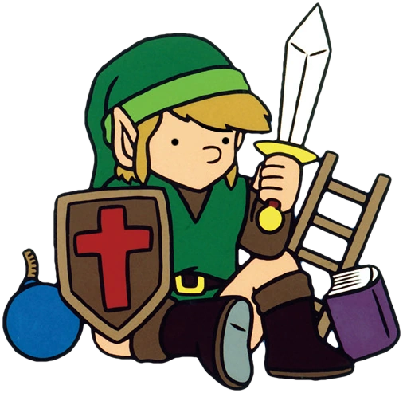

Welcome To Bread's Website
(Here are my links!)
Who is The Bread Pirate?
My name is The Bread Pirate (or Burton Brewster in real life).
I am a Zeltuber! That means I make videos about the Legend of Zelda Franchise, the famous action/adventure video game series developed by Nintendo.
I focus on the history of the Zelda Series and trivia pertaining to it. But I also do skits and gameplay!
Some of my better known accomplishments include:
- Inventing the Bread% Speedrun for Breath of the Wild
- Discovering that Wings can be used infinitely when submerged in water (Tears of the Kingdom).
- Analyzing the fortifications of Zelda towns.
For more information about me, go to the FAQ! A magical place where your wildest dreams can come true.